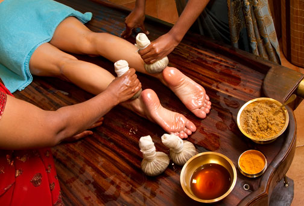

Sri Lanka has its own medicine style which called "Hela Wedakama".
This traditional medicine methord had been since long time ago.
They use local medicines for treatment.The following are some local medicines which use to ayurveda medicines.
- Ashwagandha
- Katuwalbatu
- Ginger
- Brahmi
- Pathpadagam

- Veniwalgata